朝のニュースまとめ
2026年11月9日（月）
🇯🇵 日本の主要ニュース
高市首相、きょうベトナムのトー・ラム書記長と首脳会談
高市総理大臣は9日、ベトナムの最高指導者トー・ラム共産党書記長と会談します。重要鉱物や原子力分野での連携などを盛り込んだ共同声明の発表に向けて調整が進んでいます。
出典：NHK
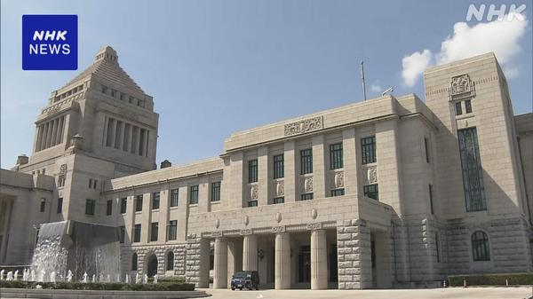
食料品の消費税減税法案、11日に参院で審議入り衆院を通過した食料品の消費税減税関連法案は、11日から参議院で審議が始まります。与党が少数の参院で、野党の賛同を得て成立させられるかが焦点です。
出典：NHK
石川の山林で見つかった遺体は監禁された20代女性と確認
交際相手とみられる容疑者の供述に基づいて山林から見つかった遺体は、監禁されていた石川県の20代女性と確認されました。警察は監禁後まもなく殺害された可能性があるとみて調べています。
出典：NHK
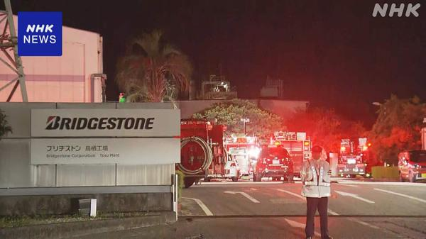
佐賀・鳥栖のブリヂストン工場で火事、約3時間半後に鎮火8日夜、佐賀県鳥栖市のブリヂストンの工場で火事があり、火はおよそ3時間半後にほぼ消し止められました。これまでのところけが人の情報は入っていません。
出典：NHK
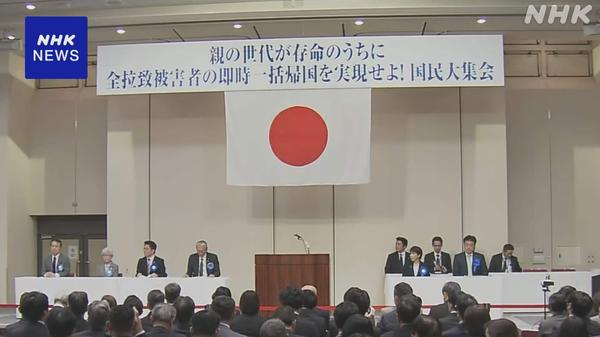
拉致被害者家族らが大規模集会、高市首相も出席北朝鮮による拉致被害者の家族と支援者が都内で集会を開き、高市首相も参加しました。家族らはすべての被害者の一刻も早い帰国に向け、政府に具体的な取り組みを求めました。
出典：NHK
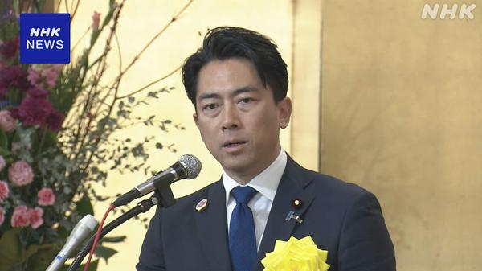
小泉防衛相、陸海空の垣根を越えた自衛隊組織のあり方を検討安保3文書の改定をめぐり、小泉防衛大臣は人口減少で隊員確保が難しくなるとして、陸・海・空の区分を越えた組織のあり方を検討する考えを示しました。
出典：NHK
「弱気相場」入りの日経平均、下値はどこまで 米AI規制の行方が焦点
米中間選挙後のAI・データセンター規制強化への警戒から日経平均は高値から2割超下げ、弱気相場入りしました。今後は米国の規制の行方が相場の焦点になると分析しています。
出典：日本経済新聞
JTのロシア事業、FSB元職員の企業が管理と報道
ロシア政府の一時管理下に置かれたJTの現地事業について、ロシアの情報機関FSBの元職員が関わる企業が管理を担うとロシアメディアが報じました。
出典：日本経済新聞
明治は減税前に値上げ、食品大手は「価格下げ」期待と原料高の板挟み
食料品の消費税減税で店頭価格の値下がりが期待される一方、明治は減税前に値上げに踏み切りました。原料高に直面する食品大手の悩みを伝えています。
出典：日本経済新聞
newmo、増資で208億円を調達 自動運転タクシーの開発を加速
ライドシェア・自動運転のスタートアップnewmoが増資で208億円を調達しました。KDDIとの提携も踏まえ、自動運転タクシーの開発を加速させます。
出典：日本経済新聞
🌍 世界の主要ニュース
フーシ派、サウジ国営石油会社の施設を攻撃したと主張
サウジアラビアとイエメンの反政府勢力フーシ派の攻撃の応酬が続く中、フーシ派は首都リヤドにある国営石油会社アラムコの施設などを攻撃したと報復を主張しました。
出典：NHK
イスラエル大統領、野党のアイゼンコット氏に正式に組閣を要請
総選挙で第2党となった野党党首のアイゼンコット氏が、ネタニヤフ首相を上回る議員の推薦を集め、大統領から組閣を要請されました。政権交代の可能性が高まっています。
出典：NHK
ポーランドの6人死亡銃乱射、検察がテロ容疑で捜査
クラクフで男が銃を乱射し6人が死亡した事件で、検察は拘束した容疑者をテロの疑いで捜査し始めました。当局は容疑者が超国家主義的な考えを持っていたとしています。
出典：NHK
 国連気候変動会議COP31がトルコで開幕
国連気候変動会議COP31がトルコで開幕COP31が日本時間の9日にトルコで開幕します。気候変動の影響とみられる災害が相次ぐ中、温室効果ガス削減の実行に向けて各国が足並みをそろえられるかが焦点です。
出典：NHK
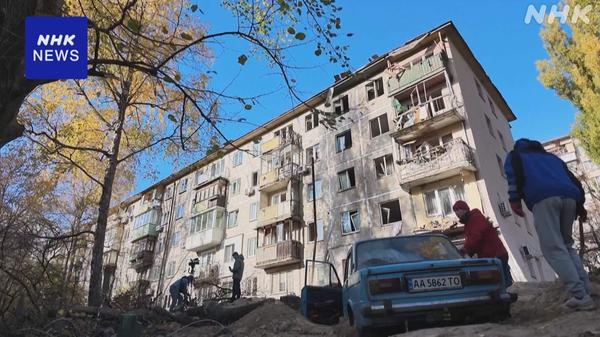
ウクライナのエネルギー施設へのロシアの攻撃続く、60万人超が停電ロシア軍によるエネルギー施設への攻撃が続き、東部の州では60万人以上が電力供給を受けられなくなっています。冬を前に市民生活への影響が広がっています。
出典：NHK
UFCのダナ・ホワイト氏、報道官打診めぐり月曜にトランプ氏と会談へ
トランプ大統領から空席のホワイトハウス報道官への就任を打診された総合格闘技UFCのダナ・ホワイト代表が、月曜日にトランプ氏と会うと明らかにしました。
出典：AP
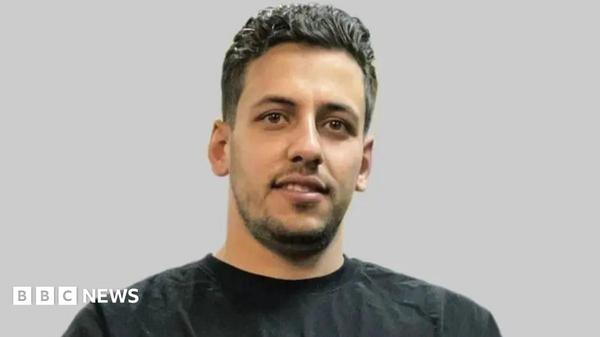
イラン、1月の抗議デモをめぐり3人の死刑を執行イランは「武装騒乱」の罪に問われた男性3人の死刑を執行しました。3人は今年1月の反政府抗議デモに参加していたとされています。
出典：BBC
🤖 AIニュース
 NVIDIA、黄CEOと中国スパイの疑いがある人物との関係を調査へ
NVIDIA、黄CEOと中国スパイの疑いがある人物との関係を調査へNVIDIAは、ジェンスン・フアンCEOと中国の情報機関に協力した疑いのある人物との関係について社内調査を始めると発表しました。フアン氏は社内メモで面識があったことを認めています。
出典：TechCrunch
Apple、Siriのエージェント化を急ぐ
Bloombergのマーク・ガーマン氏によると、AppleのJohn Ternus CEOはSiriの開発を急がせており、将来のSiriは他社アプリの操作やより複雑な作業ができるようになるといいます。
出典：The Verge
エルビスとエミネムの権利者が音楽生成AI「Suno」を提訴
エルビス・プレスリーとエミネムの楽曲権利を持つ団体が、AIによる楽曲の模倣をめぐってSunoを新たに提訴しました。Sunoが抱える訴訟はさらに増えています。
出典：The Verge
OpenAI、評価額1.25兆ドルで110億ドルを追加調達と報道
OpenAIが評価額1兆2500億ドルで新たに110億ドルを調達したと報じられました。ライバルのAnthropicは株式上場（IPO）に近づいています。
出典：TechCrunch
米AI安全研究所の職員がホワイトハウスに直接報告、独立性に懸念
米国のAI安全性センターの職員がホワイトハウスに報告する体制になっていることが分かり、評価機関としての独立性が損なわれるとの懸念が出ています。
出典：AP
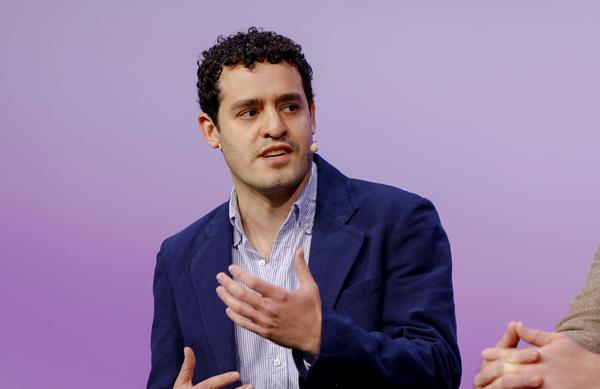
法人のAI支出が頭打ち、Anthropicの上場直前に法人カード大手Rampのデータでは、企業のAI利用は増え続けている一方で支出額は伸び悩んでいます。値下げやコスト管理の強化が、AIの急成長を前提とする投資家の見方に影響する可能性があります。
出典：TechCrunch
スシローと富士通、AIで「海を解剖」して養殖に挑戦
スシローやクロシオ水産、富士通などが高知県で、海洋データをAIで分析する養殖の取り組みを進めています。漁業の危機に対応して安定した魚の供給を目指します。
出典：ITmedia
Palo Alto Networks、AIエージェントのセキュリティ企業Clutchを5億ドルで買収協議
Palo Alto Networksが、AIエージェントのセキュリティを手がけるスタートアップClutchを約5億ドルで買収する協議をしていると報じられました。
出典：TechCrunch
「勝手に社外AIを使う」エース社員にどう対応する？
会社公認のAIでは物足りず、社員が無断で外部のAIを使う「シャドーAI」が広がっています。禁止するだけでは解決しない理由と対策を解説しています。
出典：ITmedia
💻 PC・ガジェットニュース
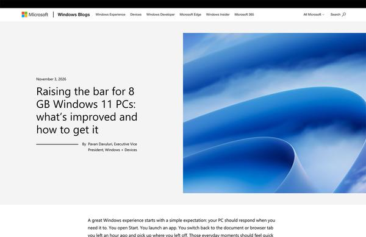
なぜ8GBメモリでもWindows 11が快適に？ Microsoftの最適化と次期「27H2」Microsoftが8GBメモリのPCでもWindows 11を快適に動かすために進めている最適化の仕組みと、次期Windows「27H2」への展望を解説しています。
出典：ITmedia PC USER
「iPhone Duo」実機レビュー、精緻なハードの一方で最適化不足も
iPhone初の折りたたみ端末「iPhone Duo」は7.6型の大画面や画面下カメラを備えます。ハードの完成度は高い一方、ソフトの最適化不足という粗さも見られるとしています。
出典：ITmedia Mobile
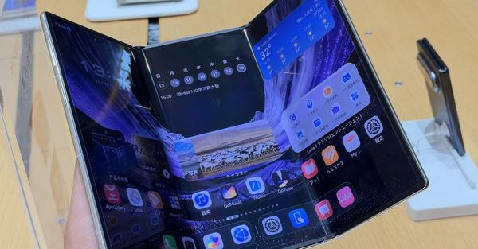
3つ折りスマホ「HUAWEI Mate XT 2」、G型折りに変更し防水にも対応ファーウェイの新しい3つ折りスマホは折り方がZ型からG型に変わり、開くと10.2型になります。シリーズ初の防水対応も実現しました。
出典：ITmedia Mobile
Epic Games LauncherがSteamOSに対応へ
Epic Gamesは、Linux版のEpic Games LauncherがSteamOSとSteam Deckを正式にサポートすると明らかにしました。
出典：The Verge
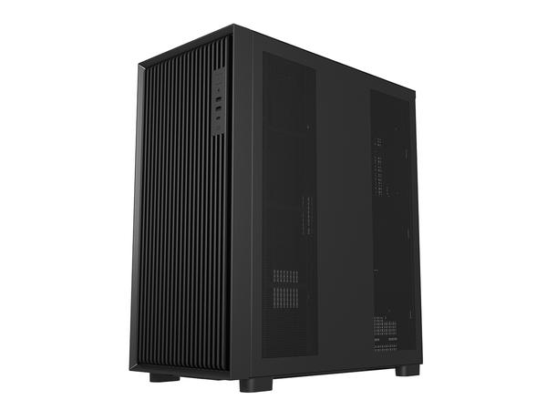
HDD18台を1台のPCに、ストレージ特化の大型PCケース「U660」アユートは、FSP製で最大18台のHDDを搭載できるワークステーション向けPCケース「U660」を11月13日に発売します。実売予想価格は3万3200円前後です。
出典：PC Watch
新型iPad mini、バッテリーが公称を大きく上回る14時間
新型iPad miniのバッテリー持ちを試したところ、公称値を大きく上回る約14時間を記録したと紹介しています。
出典：ギズモード・ジャパン
 「GeForce RTX 5090」が120万円台に高騰、それでもアキバで売れる理由
「GeForce RTX 5090」が120万円台に高騰、それでもアキバで売れる理由RTX 5090搭載カードは初登場時の約3倍となる120万円台が「通常価格」になっていますが、秋葉原では買い手が途絶えていないといいます。
出典：ITmedia PC USER
Razer、充電不要でノイキャン付きの有線ゲーミングイヤホン「Hammerhead V3 Chroma」
Razerから、ノイズキャンセリング（ANC）とRGBライティング、多彩なサウンドモードを備えた有線ゲーミングイヤホンが登場しました。
出典：ギズモード・ジャパン
サムスン「Galaxy Fit 4」はキャッシュレス決済に対応か
サムスンの新型スマートバンド「Galaxy Fit 4」について、NFCによるキャッシュレス決済に対応するというリーク情報が出ています。
出典：ギズモード・ジャパン
🔥 Xのトレンド（日本）
ジャンルで絞らず上位20件を掲載。「未確認」はX上の投稿だけを根拠にしたもので、報道機関による裏付けはありません。
1. フェルミン
サッカー・スペイン1部で8日（日本時間9日未明）、バルセロナがアトレティコ・マドリードに2-1で逆転勝ちし、フェルミン・ロペスが前半終了間際の同点弾と66分の決勝点の2ゴールを挙げました。首位を守った立役者として称賛されています。
出典：The Guardian
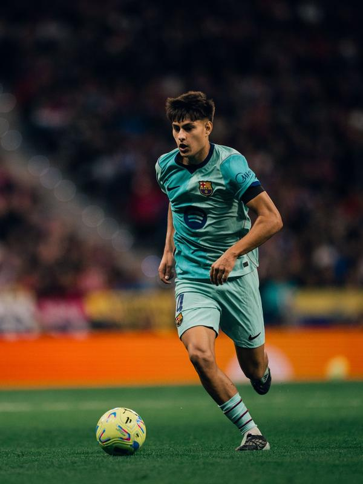
2. フレンキー
同じバルサ対アトレティコ戦で、デ・ヨングはベンチスタートから後半頭に右サイドバックとして投入されました。流れを変えたとして「フレンキー様様」と評価する声と、先発させなかった監督への不満が混ざっています。
出典：The Guardian
4. アトレティコ
ラ・リーガ首位攻防戦は、10分にジュリアーノ・シメオネの得点でアトレティコが先制したものの逆転負けし、3位のままバルサとの差は5に広がりました。前半の内容の良さを評価する声も多く出ています。
出典：The Guardian
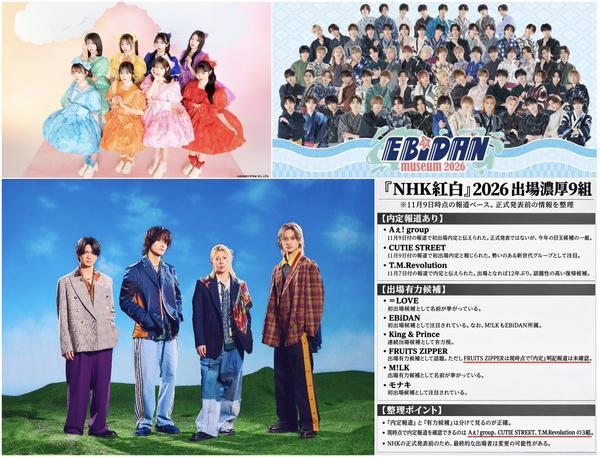
6. 紅白内定
大みそかのNHK紅白歌合戦の出場者に関する「内定」報道が相次ぎ、Aぇ! group、CUTIE STREET、T.M.Revolutionなどの名前が挙がっています。ファンの祝福や、推しの発表を待つ投稿が広がっています（NHKの正式発表前）。
⚠ 未確認（X情報のみ）
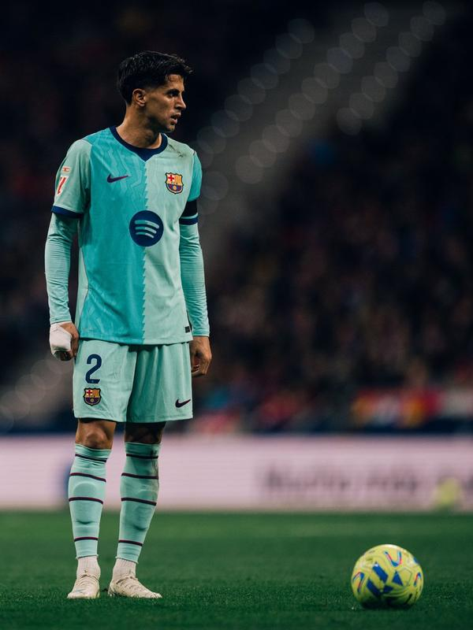
7. カンセロ
バルサの左サイドバックで先発したカンセロは、60分ごろにクリステンセンと交代しました。攻守で噛み合わなかったとして、ファンの間で起用への批判が出ています。
出典：The Guardian
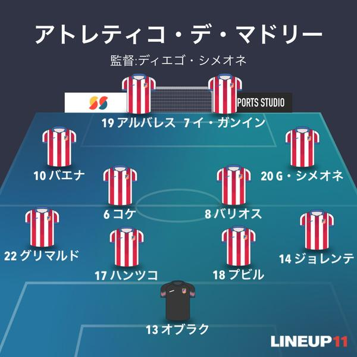
8. フリアン
アトレティコのフリアン・アルバレスは6分の決定機を外す一方、先制点をアシストしました。夏にバルサ移籍を望んでいた経緯から、「バルサのためにプレーしている」といったネタ投稿でも盛り上がっています。
出典：The Guardian
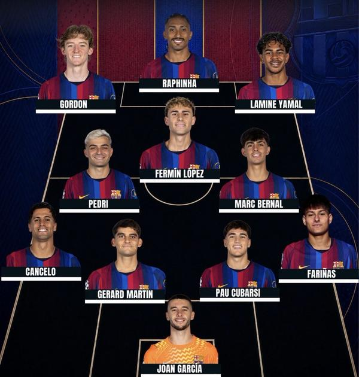
9. ベルナル
ロドリの欠場を受けて、バルサでは若手のマルク・ベルナルが中盤で先発し、73分に交代しました。デ・ヨングではなくベルナルを先発させた采配や、調子を上げている評価が話題です。
出典：The Guardian
ソフトバンクが20周年記念で、20日間毎日抽選で1人にプレゼントを贈るキャンペーンを実施中です。今日のお題のハッシュタグを付けて応募する投稿が一斉に流れ、トレンド入りしました。
⚠ 未確認（X情報のみ）
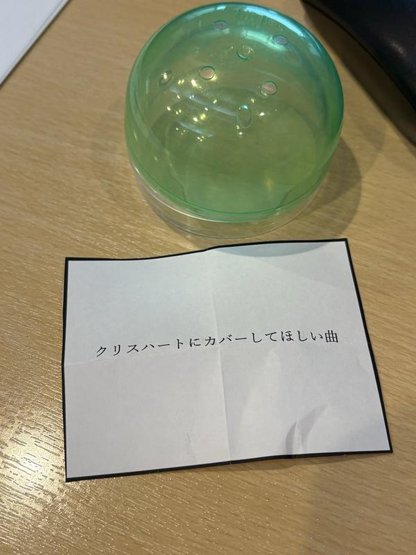
11. #モーブー
名古屋のラジオ局ZIP-FMの朝番組のハッシュタグとみられます。パーソナリティーが薬疹だったと話したことへの気遣いや、番組内クイズの感想が多く投稿されています。
⚠ 未確認（X情報のみ）
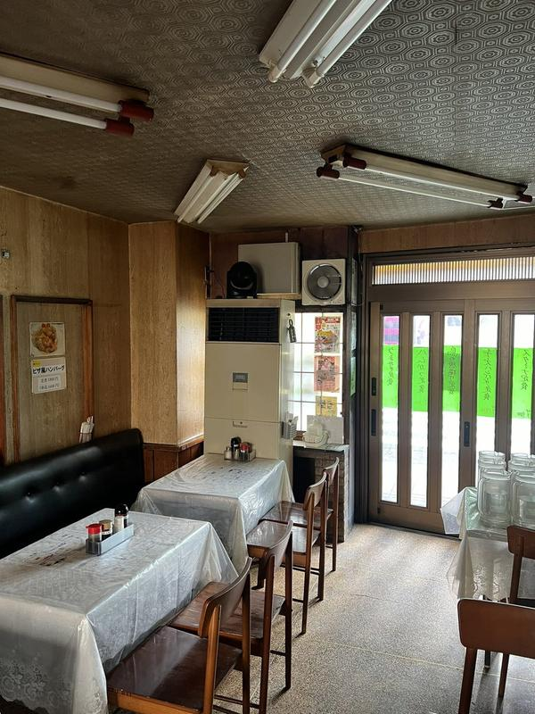
12. 換気の日
11月9日は「いい（11）くうき（9）」の語呂合わせで「換気の日」。寒くなる時期の換気や風邪予防を呼びかける企業アカウントの朝の投稿などが多く見られます。
⚠ 未確認（X情報のみ）
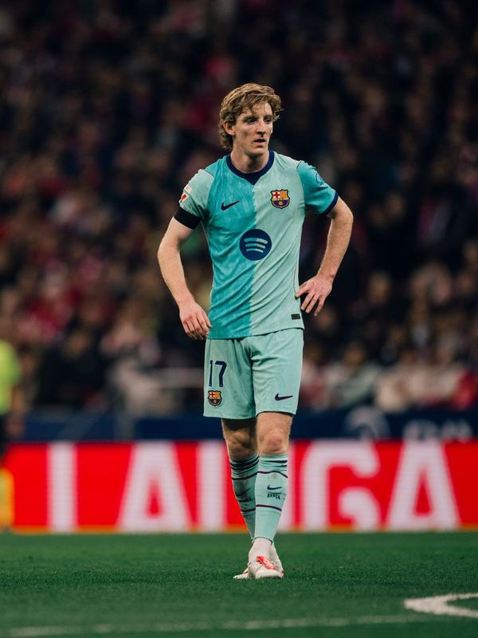
13. ゴードン
バルサで先発したアンソニー・ゴードンは85分にアデイェミと交代しました。持ち味を出せなかったとして批判と擁護の両方の意見が出ています。
出典：The Guardian
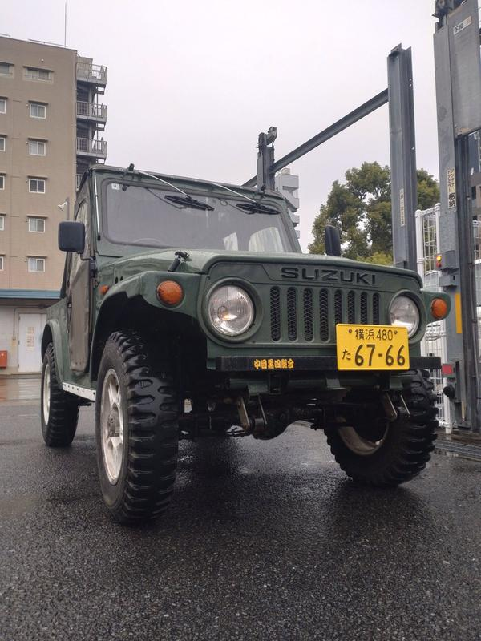
14. #ちょうどいいラジオ
FMヨコハマの朝のラジオ番組のハッシュタグです。雨で寒い月曜の朝の挨拶や、健康診断の採血など番組のメールテーマに沿った投稿で盛り上がっています。
⚠ 未確認（X情報のみ）
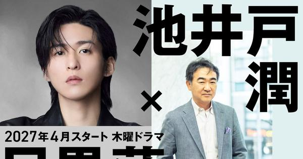
15. 池井戸潤
Snow Manの目黒蓮さんが2027年4月スタートのテレビ朝日系木曜ドラマで主演し、池井戸潤さんが原案と脚本を手がける完全オリジナル作品になると発表されました。初タッグに驚きと期待の声が広がっています。
出典：MANTANWEB
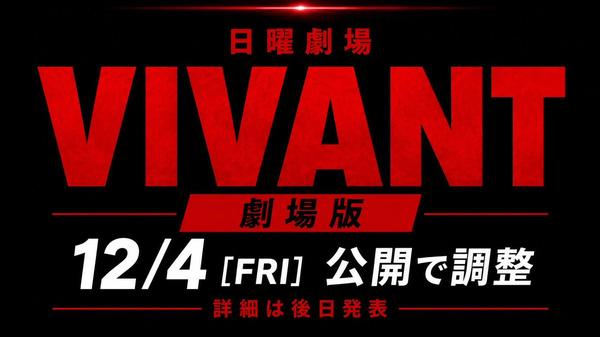
17. VIVANT
TBSのドラマ「VIVANT」の第2シーズン最終回が8日夜に放送されました。最終回の感想や考察と、来月公開という劇場版への期待の投稿が続いています。
⚠ 未確認（X情報のみ）
18. 中村ゆりさん
フジテレビ月9「119エマージェンシーコール」のシーズン2が2027年4月期に放送されることが決まりました。亡くなった中村ゆりさんが演じた高千穂係長は消防庁へ出向する設定になり、主演の清野菜名さんらが追悼のコメントを寄せています。
出典：モデルプレス
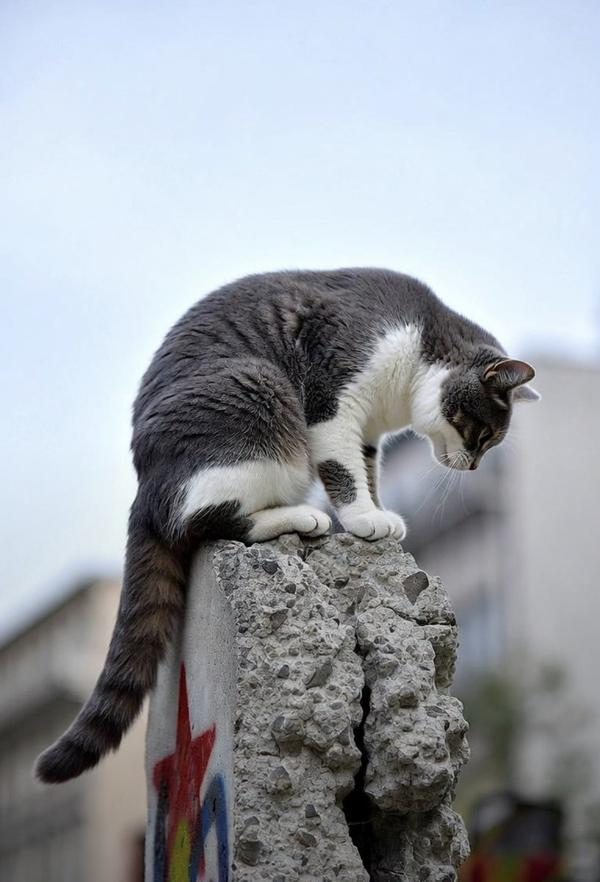
19. げつようび
週の始まりの「げつようび」を合言葉にした朝の挨拶投稿がトレンド入りしています。雨と寒さの中、「今週もよろしく」と励まし合う投稿が中心です。
⚠ 未確認（X情報のみ）
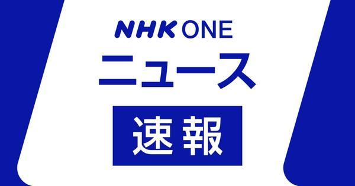
20. 国分寺駅
9日朝、JR中央線の国分寺駅で人身事故があり、快速電車が東京〜高尾間で一時運転を見合わせました（その後運転再開）。通勤時間帯の影響を伝える投稿が集中しています。
出典：NHK
Grok Bot がまとめました。